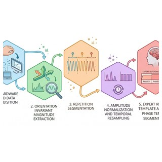

FormSense: A Continuous Fatigue and Form Tracking Application for Resistance Workout Monitoring Utilizing Phase-Graded IMU Analysis

Abstract
Poor technique in resistance training is a leading cause of musculoskeletal injury, and the risk grows within a set as accumulating fatigue erodes movement control. We propose FormSense, a wrist-worn six-degree-of-freedom inertial measurement unit (IMU) application that closes three gaps in existing wearable systems: inability to localise a fault within a single repetition, dependence on large supervised datasets, and the absence of an actionable link between within-set form decline and fatigue. A 100 Hz signal stream is reduced to orientationinvariant magnitudes, segmented and resampled into fixed-length repetitions, and compared against an expert-derived reference template built from four expert athletes. Every repetition is partitioned into three biomechanical phases (initiation, main drive, deceleration) and graded GOOD, AVERAGE, or BAD using percentile thresholds drawn from the expert distribution; a plain-English diagnostic engine attributes each weak phase to insufficient peak force, acceleration-path mismatch, or inconsistent wrist rotation, and a fatigue and consistency layer flags withinset decline and recommends load reduction. Validated across five exercises, FormSense produced phase-level correlations of r = 0.20 to 0.87 for experts and r = −0.30 to 0.70 for the novice, delivering real-time per-repetition feedback for technique correction and injury prevention without laboratory equipment.
In one line
An application that tracks fatigue and exercise form during resistance workouts using phase-graded IMU analysis.
Cite
@inproceedings{mahi2026formsense,
title = {FormSense: A Continuous Fatigue and Form Tracking Application for Resistance Workout Monitoring Utilizing Phase-Graded IMU Analysis},
author = {Abdullah Al Mahi and Munawar Arif Nitol and Md. Mehedi Hasan Bhuiyan and Sadman Rahman and Kazi Newaj Faisal},
booktitle = {Proceedings of IEEE iCACCESS},
year = {2026}
}
Related papers
* Equal contribution / co-first authorship.